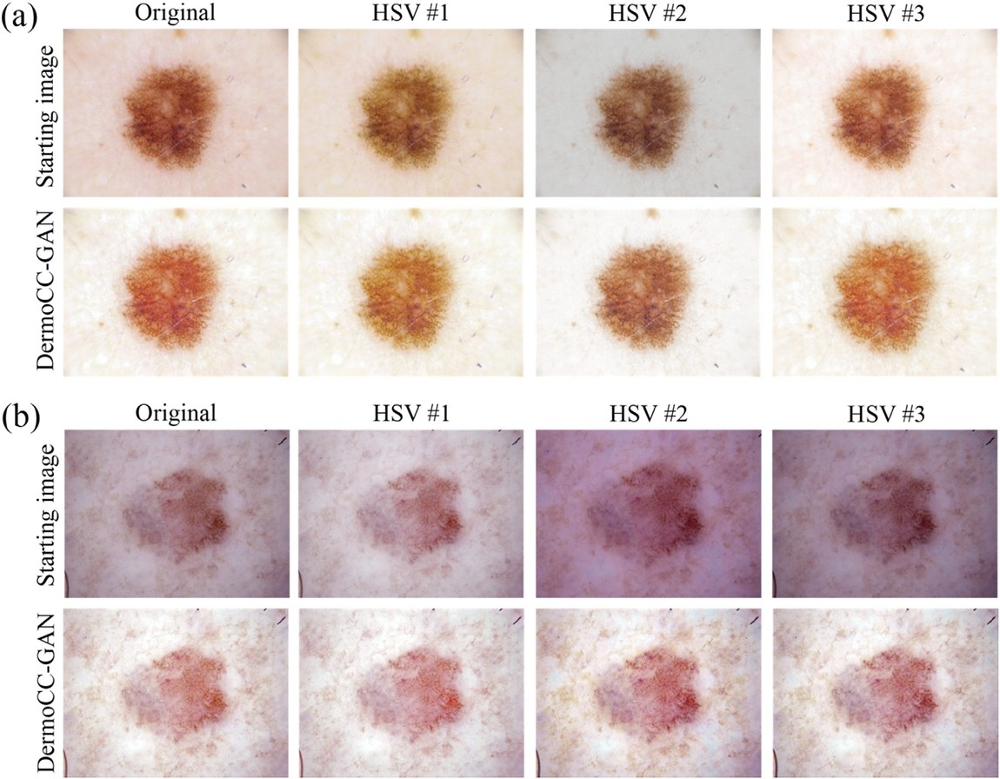
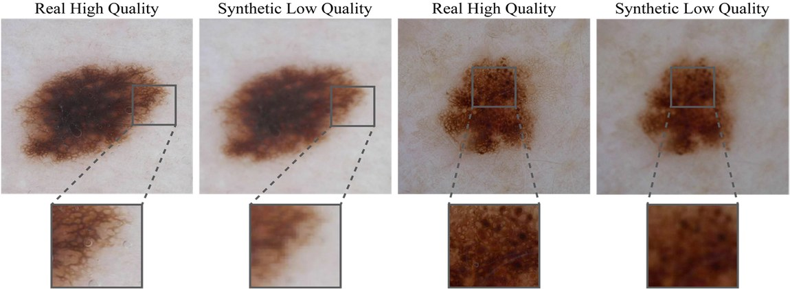

Research — multi-scale biomedical imaging
From single cells to skin.
“From in vitro to in vivo imaging: advanced computational methods for multi-scale biomedical image analysis.”
PhD in Bioengineering, Politecnico di Torino — cum laude, ranked top 10% by the Board. The through-line: pairing deep learning with domain-driven heuristics to make medical images more reliable, validated on real clinical impact rather than metrics alone.
µmmicro · in vitro
Optical coherence microscopy — 3D cancer organoids
CNN segmentation and custom tracking for longitudinal monitoring of organoids, supporting a fully automated pipeline to analyze therapy efficacy (REAP project).

mmtissue
Fluorescence microscopy enhancement
A hybrid wavelet + deep-learning framework that enhances fluorescence images, enabling low-energy, sample-preserving acquisition without sacrificing detail.
cmmacro · in vivo
Dermoscopy — GANs for color & resolution
Two flagship contributions making in-vivo skin imaging more consistent and informative for both clinicians and downstream AI.
🎨 GAN-based color constancy
DermoCC-GAN normalizes images shot under different lighting into a consistent color space.

🔍 Synthetic degradation for super-resolution
Training SR models on synthetically degraded images recovers diagnostic detail when real pairs are scarce.
